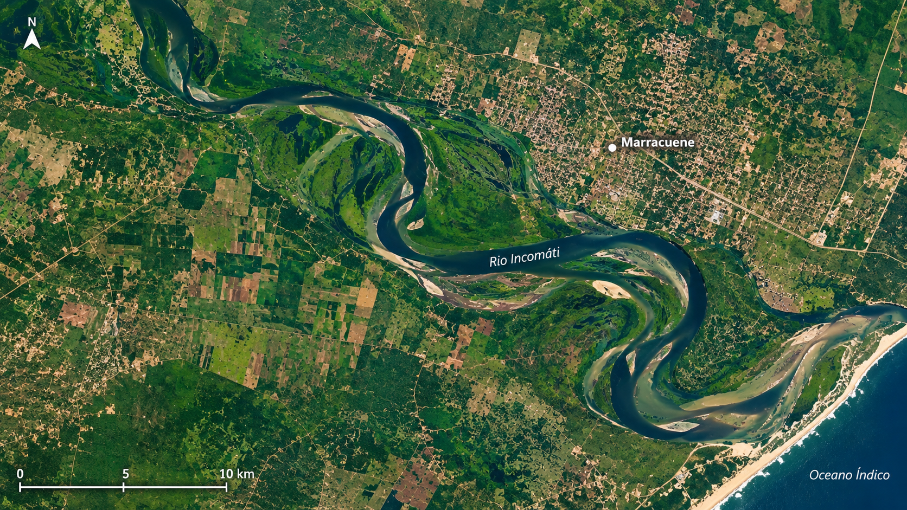
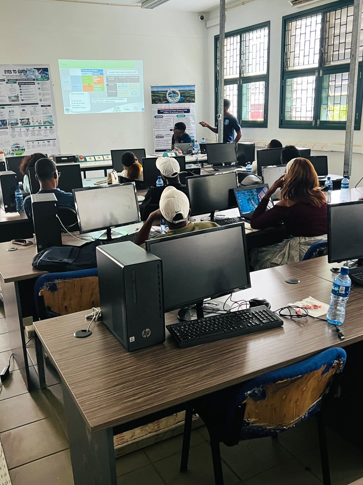
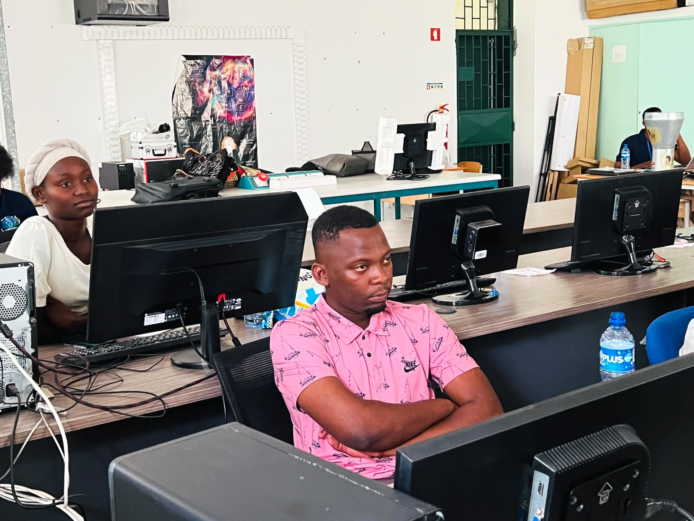
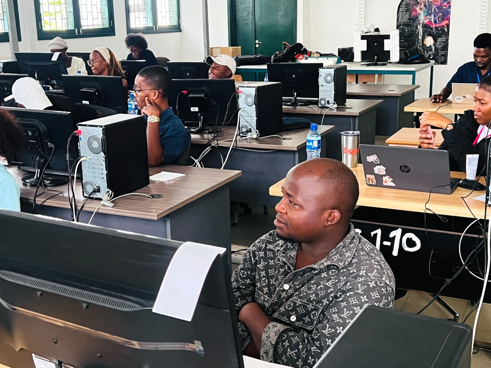
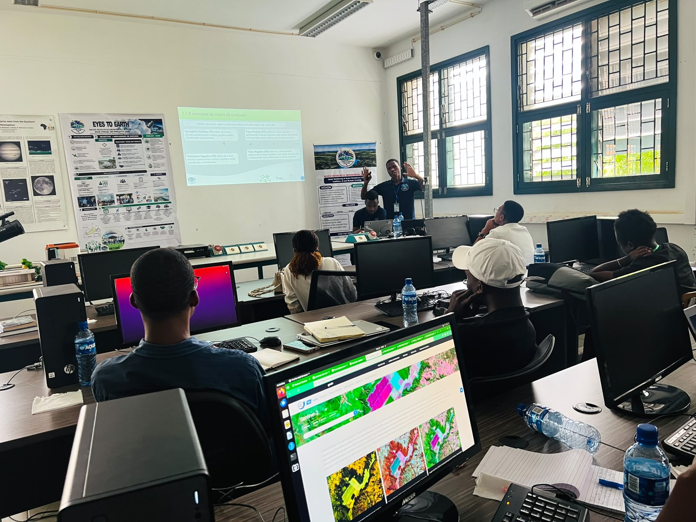
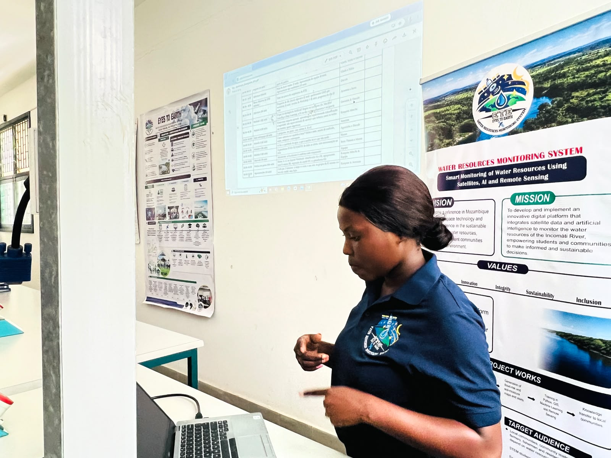
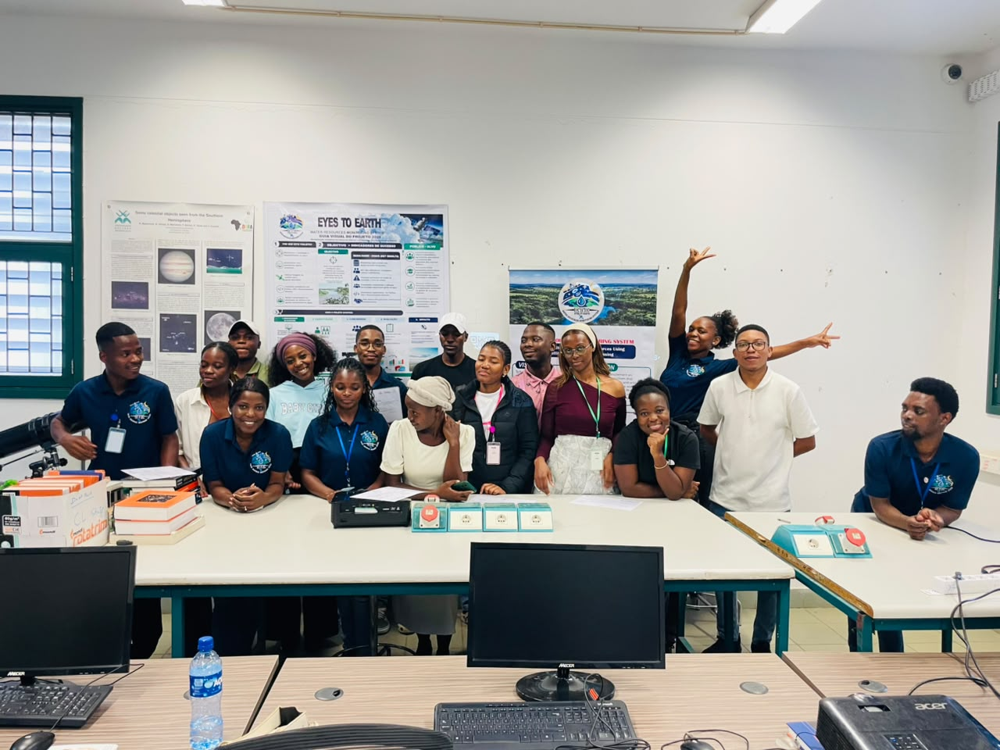
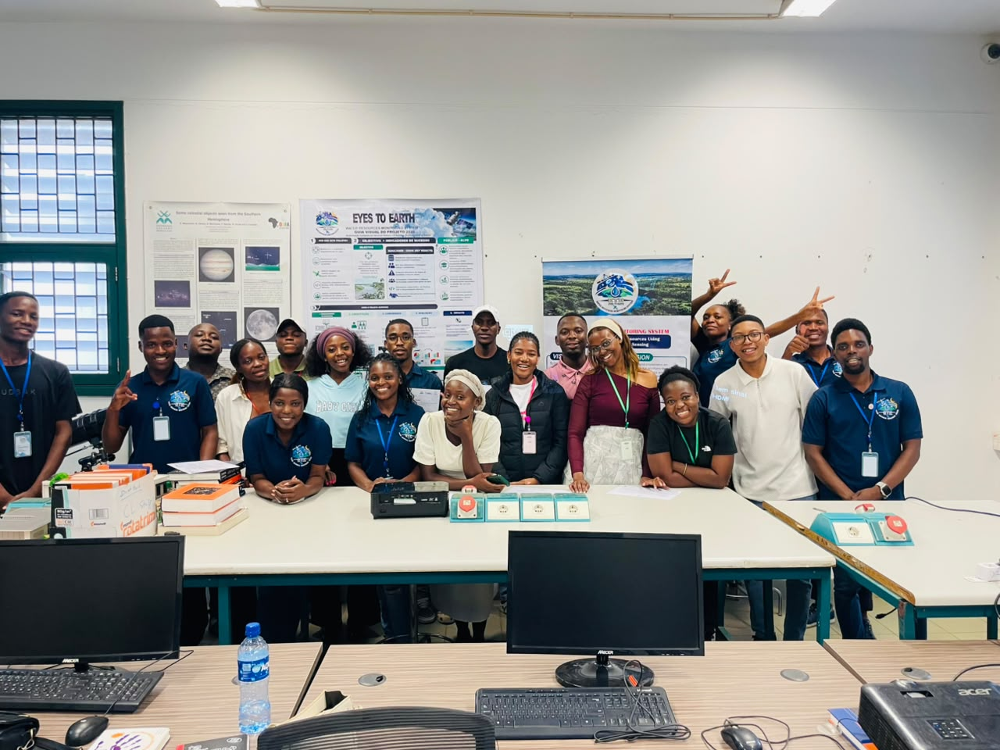
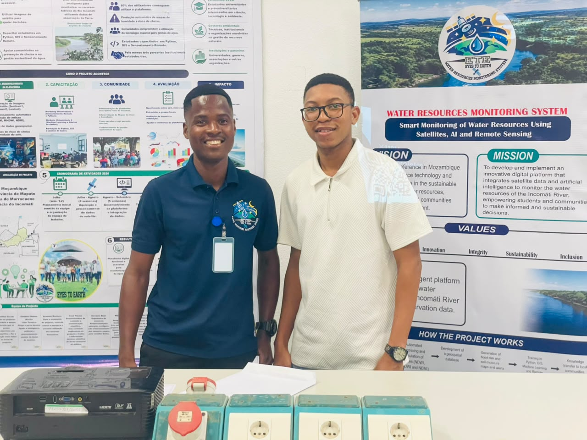

Data
21 de Novembro de 2026
EYES TO EARTH — STUDENT WORKSHOP 2
Ciência, tecnologia e inovação para compreender os recursos hídricos e apoiar a previsão de cheias.
21 de Novembro de 2026
Maputo, Moçambique
Conhecer o WorkshopO segundo Workshop de Estudantes EYES TO EARTH constituiu uma oportunidade de aprendizagem, partilha de conhecimentos e exploração de tecnologias inovadoras aplicadas à monitorização dos recursos hídricos.
A iniciativa reuniu 12 participantes de diferentes níveis académicos e áreas de formação, promovendo o diálogo entre ciência, observação da Terra e inteligência artificial.
Durante o encontro, os participantes tiveram contacto com dados de satélite, aplicações de inteligência artificial, monitorização da água e previsão de cheias. Foram também realizadas actividades práticas, momentos de intercâmbio científico e uma demonstração da plataforma EYES TO EARTH.
21 de Novembro de 2026
Universidade Eduardo Mondlane (UEM), Faculdade de Ciências, Departamento de Física, Laboratório de Astronomia, Maputo, Moçambique.
12 participantes de diferentes níveis académicos e áreas de formação.
O Workshop explorou a utilização de tecnologias e ferramentas científicas para transformar dados em informação útil à gestão sustentável dos recursos hídricos.
Exploração de imagens de satélite e dados geoespaciais para observar a superfície terrestre e acompanhar alterações ambientais.
Utilização de dados e tecnologias de observação da Terra para apoiar a análise e monitorização dos recursos hídricos.
Aplicações de inteligência artificial na análise de dados, avaliação de modelos e interpretação de fenómenos ambientais.
Exploração do potencial dos dados de satélite e dos modelos de inteligência artificial no apoio à previsão de cheias e à gestão de riscos.
Marracuene, situada na província de Maputo, possui um importante significado histórico, geográfico e ambiental no contexto moçambicano.
A região está associada à Batalha de Marracuene, ocorrida a 2 de Fevereiro de 1895, um episódio marcante da resistência à ocupação colonial portuguesa. Durante o período colonial, Marracuene era também conhecida pelo nome de Vila Luísa.
O Rio Incomáti constitui um elemento importante da paisagem hidrográfica da região. A sua observação permite compreender a dinâmica dos recursos hídricos, as alterações na paisagem e a vulnerabilidade de determinadas áreas às cheias.
A observação da Terra através de imagens de satélite oferece ferramentas importantes para acompanhar os rios, identificar alterações na extensão da água e apoiar a tomada de decisões ambientais.

Imagem ilustrativa gerada por inteligência artificial. Não corresponde a uma captura real de satélite nem a um mapa geográfico validado.

A plataforma EYES TO EARTH constitui um espaço de exploração de ferramentas e aplicações relacionadas com a observação da Terra, análise de dados e monitorização ambiental.
Durante o Workshop foi realizada uma demonstração da plataforma, permitindo aos participantes conhecer algumas das suas funcionalidades e possibilidades de utilização.
Explorar a Plataforma ETERegistos das actividades, apresentações, aprendizagem prática, intercâmbio científico e momentos de reconhecimento dos participantes.















Consulte os documentos e materiais utilizados durante as sessões do Workshop.
A ciência aproxima-nos, inspira-nos e abre caminhos para transformar realidades.
Visitar EYES TO EARTHO Workshop EYES TO EARTH — Student Workshop 2 contou com o apoio dos seus financiadores e parceiros.


E-mail: mozscienceaplicationdevelopmen@gmail.com
LinkedIn: SADI Mozambique
Facebook: Página Sadi Mozambique
Designer Gráfico: Nilza Monteiro Taide
Gestora de Mídia: Nilza Monteiro Taide